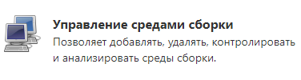
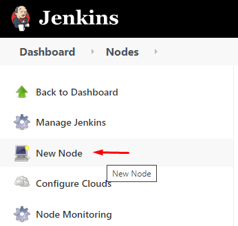
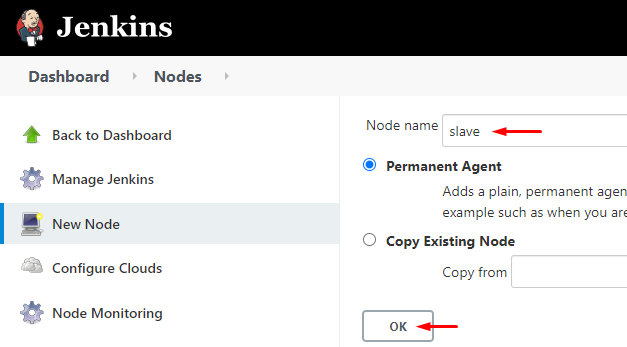

1. Настройка агента
Если автотесты при выполнении не отображаются визуально в браузере (выполняются в фоновом режиме) то нужно создать slave агента.
1) Откройте Jenkins и перейдите в Dashboard. Затем нажмите Manage Jenkins

2) Перейдите в раздел Configure Global Security
и в подразделе Agents включите Random

3) Теперь снова перейдите в Dashboard. Затем нажмите Manage Jenkins
На этот раз перейдите в раздел Manage Nodes and Clouds

4) Создайте новую ноду нажав на кнопку New Node

5) Введите имя, выберите тип Permanent Agent и нажмите ОК

6) Настройте ноду следующим образом
поле "# of executors" - указывается количество потоков
поле "Labels" - очень важное, именно введенное тут имя будет использоваться при назначении ноды автотесту
Укажите путь где будет агент хранить свои данные

Если вы хотите чтобы этой нодой пользовались только выбранные задачи тогда выберите эту опцию

Нажмите кнопку Save.
7) Нода создана, но она не работает. Нажмите на имя ноды slave
Вы окажетесь на странице с описанием того что нужно сделать чтобы запустить агента.
Нажмите на кнопку чтобы скачать файл
Нажмите на ссылку чтобы скачать файл
Поместите оба эти файла в папку C:\Autotests\########\jenkins\slave
Далее нужно запустить агента командой как указано на странице
(агент обязательно должен быть запущен от имени администратора)
Run from agent command line:
java -jar agent.jar -jnlpUrl http://192.168.201.1:8081/computer/slave/slave-agent.jnlp -secret aaaaaaaaaaaaabbbbbbbbbbbbbccccccccccccccccdddddddddddd -workDir "C:\Autotests\#########\jenkins\slave"
Run from agent command line, with the secret stored in a file:
echo aaaaaaaaaaaaabbbbbbbbbbbbbccccccccccccccccdddddddddddd > secret-file java -jar agent.jar -jnlpUrl http://192.168.201.1:8081/computer/slave/slave-agent.jnlp -secret @secret-file -workDir "C:\Autotests\#########\jenkins\slave"
ВАЖНО! Чтобы в консоли поддерживался русский язык в коменде нужно дописать -Dfile.encoding=UTF8
java -Dfile.encoding=UTF8 -jar agent.jar -jnlpUrl http://192.168.201.1:8081/computer/slave/slave-agent.jnlp -secret aaaaaaaaaaaaabbbbbbbbbbbbbccccccccccccccccdddddddddddd -workDir "C:\Autotests\#########\jenkins\slave"
ВАЖНО! Открываем консоль от имени администратора и выполняем команду
в консоли по завершению появится сообщение Connecter что означает что агент подключен.
Теперь если посмотреть в список агентов мы видим как slave показан активным (без красного квадратика)
Настройка агента завершена.
Created with the Personal Edition of HelpNDoc: Free EPub producer